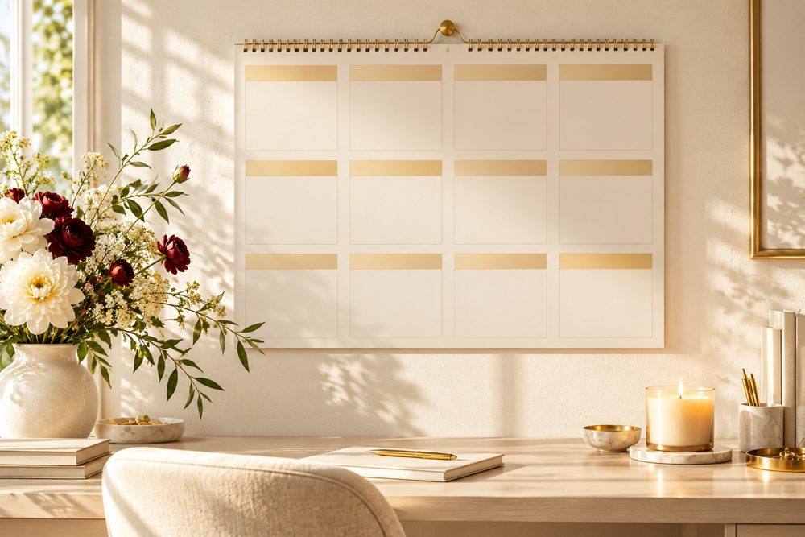

Как узнать свой денежный год 2027: три вещи, которые я смотрю в вашей карте
Почему в 2027 году одни выйдут на новый доход, а другие будут работать ещё больше за те же деньги? Дело обычно в двух вещах: в каком деле вы пытаетесь заработать и что год вообще приготовил вам в деньгах

Многие ждут «удачный денежный год», как будто он просто случится. За 300 с лишним разборов «Путь Звезды» я увидела другое: деньги растут, когда вы зарабатываете своим способом и знаете, что приносит вам год. Вот три вещи, которые я смотрю, чтобы это совпало

1Ваш денежный канал
В натальной карте видно, через что вам проще зарабатывать: через своё дело или через карьеру, в одиночку или через команду, через продажи или через экспертность
Расскажу на примере моего мужа
Никакой магии здесь нет. Человек просто перестал зарабатывать «не своим» способом

2Ваш денежный 2027 год: тенденции и периоды
Дальше я накладываю на вашу карту 2027 год. Главное здесь соляр, карта вашего личного года. Он показывает, что вообще возможно в деньгах в этом году: рост дохода, новый источник заработка или год, где важнее сохранить и укрепить
Транзиты, движение планет по вашей карте, уточняют периоды внутри этих тенденций: где деньги идут легче, а где лучше не брать кредит и не рисковать
Покажу на себе
Этой осенью ретроградный Сатурн идёт по моему 11 дому, это интернет и аудитория. Охваты просели, как у многих. Я знала об этом заранее, поэтому не паниковала, а увеличила количество роликов
Когда знаешь, откуда трудность, паниковать некогда, ты работаешь

3Где подстелить соломки: компенсаторика
Компенсаторика это простые действия, которые снижают напряжение трудного периода. Можно подстелить себе соломки и смягчить негативные процессы не только за счёт астрологии, но и за счёт обычной логики. На эту часть разбора клиенты реагируют сильнее всего: прогноз сразу превращается в понятные действия
Вот примеры компенсаторики по деньгам из моих разборов:
- кредит в этом году можно, но только на недвижимость
- кредит на бизнес возможен, если каждая копейка уйдёт в бизнес, а не на покупки
- тяжёлая планета идёт по зоне ежедневной работы: поменять что-то в работе, пойти за повышением, начать зарабатывать по-другому
- напряжение по дому и имуществу: заранее сделать ремонт или осмотр машины
Денежные дни я тоже рассчитываю, эту систему я полгода проверяла на себе, на муже и на ученицах. Но это дополнение к картине года. Зачем знать отдельные периоды, если не знаешь полный прогноз на год?
Частично да. Задайте себе три вопроса:
- через какое дело деньги приходили ко мне легче всего?
- в какие месяцы прошлых лет у меня был денежный рывок, а в какие провал?
- где в прошлом году деньги утекли и можно ли было подстелить соломки заранее?
Это уже подсказка. Но точный ответ на 2027 год требует вашего точного времени и места рождения, соляра и расчёта десятков транзитов. Здесь и нужна моя работа
Что будет, если не знать
Год без карты обычно выглядит так: хорошие периоды проходят мимо, потому что вы о них не знали, а трудные приходят внезапно и кажутся невезением. Вы поднимаете цену в «тихий» месяц и решаете, что цену поднимать нельзя. Берёте кредит в напряжённый период и полгода его отрабатываете
Знать свой денежный год заранее значит успеть подстелить себе соломки. Брать кредит только там, где он работает на вас, поднимать цену в сильный период и спокойно готовиться к тихому
Поэтому я собрала все три шага в один разбор «Мой денежный год 2027». Ниже рассказываю, что вы получите и как это проходит ↓